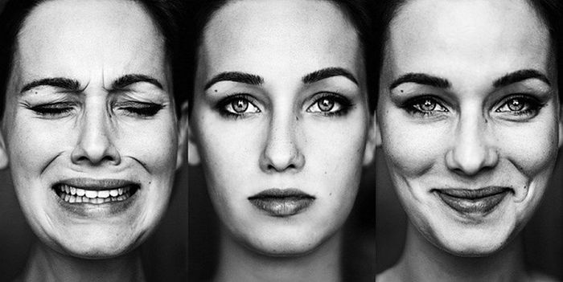
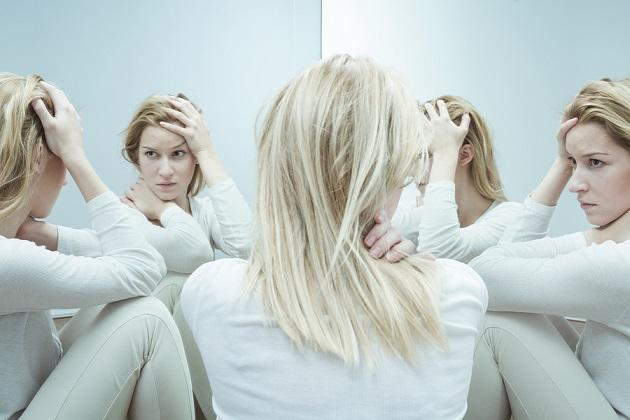
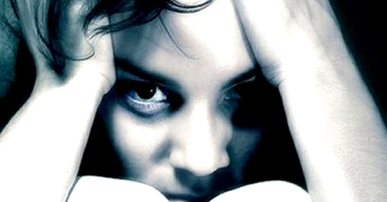

La depresión y trastorno bipolar entran en la clasificación de trastonos afectivos.
Estos se manefiestan como cambios de humor repentinos,de alegre a enojado, triste a no sentir nada; sin razón aparente esto se hace presente en un individuo.
Es normal que esta etapa se presente en adultos pues están sometidos a constante estres lo que toma en concecuencias trastornos de sueño, ansiedad, trastornos alimenticios, etc. Lo que puede recaer en los conocidos como trastornos afectivos, estos no toman un rumbo crítico cuando se les da tratamiento, pero si afecta considerablemente el desempeño de quien lo padece.
Cabe mencionar que actualmente los adolecentes y niños también son altamente propensos a padecer de este tipo de trastornos, ya sea por su entorno o por episodios caoticos, es de prioridad que su adulto reponsable se mantenga pendiente, eso significa monitoriar su salud mental.
Lo más recomendable es disminuir lo que ocasiona estas consecuencias y sobre todo buscar ayuda profesional, una seción de terapía puede ser vital para el desahogo del individuo, por lo tanto su trastorno afectivo será poco a poco tratado. Para que no termine con una depresión o bipolaridad permanentes.
Los trastornos psicóticos directamente deben tratarse con un especialista en Psicriatria, no deben tomarse a la ligera, su desarrollo puede ser ¨controlado¨ pero esto también depende de la participación voluntaria de la persona. La enfermedad es tan grave para el paciente como para quienes lo rodean, es dificil lidiar con ello siempre y cuando se le de un debido tratamiento habrá una posibilidad que la persona mantenga una vida estable.
Estos trastornos son catalogados como graves puesto que la persona se desconecta de la realidad por fracciones de tiempo pequeños o duraderos y su percepción de la realidad se va volviendo nula con el avance de la enfermedad. Las enfermedades que abarcan esta clasificación son las siguientes.
Esta enfermedad puede desarrollarse ya sea por un evento traumático que el cerebro desea bloquear, desviandose a traves de otra personalidad o directamente siendo una enfermedad patológica. El trastorno disosicativo se resume en las manifestaciones de multiples personalidades del usuario, resultan ser aleatorias y aunque la ¨conciencia principal¨ siga existiendo las alternativas se presentan. Mayormente con la intención de bloquar un evento severo en su vida.
Se tiene entendido que una persona psicópata posee una escases (por no decir nula) percepción de las emociones y dificultad empática, esto es una condición, pero si hablamos del trastorno es un asunto distinto pues este directamente citado se denomina como "una afección mental por la cual una persona tiene un tiempo prolongado de manipulación, explotación o violación de los derechos de otros sin ningun remordimiento".
